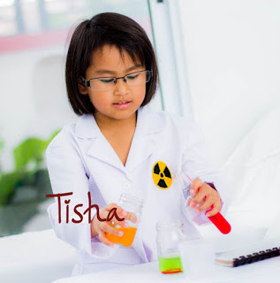

Kostum Profesi Anak
0858 9245 6044
Marie Curie Peraih Dua Penghargaan Nobel di Bidang Sains
Semua orang mengenal Marie Curie yang sangat legendaris, yang sampai saat ini satu-satunya peraih dua penghargaan Nobel di Bidang Sains, penghargaan yang diterimanya untuk dua subject yang berbeda, tahun 1903 Marie mendapatkan penghargaaSorbonne adalah satu-satunya Universitas yang mau menerima murid perempuan. Walaupun Marie sudah tertinggal selama 6 tahun dan bahasa prancisnya tidak bagus, Marie sangat tekun belajar hingga larut malam sehingga dia lulus dengan nilai terbaik di kelasnya.
Marie bertemu dengan Pierre curie pada tahun 1891 saat itu Piere sudah terkenal sebagai peneliti
dan penemu, beberapa tahun kemudian mereka menikah. Pasangan suami Istri Curie ini sangat idealis,
intelektual, tekun, pekerjan keras dan selalu bersemangat mencapai suatu tujuan. Mereka melakukan
berbagai macam penelitian di laboratorium mereka dan menuliskan catatan secara cermat dan terperinci
mengenai hasil-hasil penemuan mereka.

Suatu hari Marie sangat tertarik dengan penemuan Bacquerel mengenai sinar Uranium, menurutnya
penemuan ini sangat penting. Kemudian Marie meneliti dan menguji sinar Uranium tersebut, dengan
menggunakan Electrometer hasil penemuan Piere dan melakukan sejumlah teknik-teknik kimia lainnya,
akhirnya Marie dan Piere menemukan unsur baru yang mereka sebut Polonium untuk mengenang kampung
halamannya Marie Polandia. setelah melakukan Penelitian lebih lanjut mereka kembali menemukan
unsur baru yang lebih kuat yang mereka beri nama Radium. Sedangkan energy yang dilepaskan oleh
Polonium dan Radium mereka sebut dengan "radioaktivitas"
Catatan-catan terperinci hasil penelitian Marie mengenai unsur-unsur Radioaktivitas ini kemudian
di ajukan Marie sebagai sebuah desertasi yang kemudian membuat Marie Curie dapat meraih gelar
Ph.D. Dan pada tahun yang sama Marie Curie, Piere Curie dan Bacquerel menerima penghargaan Nobel
di bidang fisika.
Karena kecelakaan di Jalan, Piere curie meninggal dunia di tahun 1906, agar tidak larut dalam
kesedihan lalu Marie kemudian meneruskan pekerjaan suaminya sebagai seorang Ketua Laboratorium
dan menjadi seorang dosen perempuan pertama kalinya di Universitas Sorbonne. Marie juga terus
melanjutkan penelitian-penelitian sehingga tahun 1911 Marie Curie kembali mendapatkan penghargaan
Nobel di bidang kimia atas usahanya memperkenalkan istilah Desintegrasi (Perubahan radioaktif
pada sebuah atom dengan elemen yang berbeda) dan Transmutasi (perubahan
radioaktif pada sebuah atom dengan elemen yang berbeda)
Jasa pasangan suami istri Curie ini sangat besar bagi dunia, karena penemuan mereka banyak di
manfaatkan di dunia pengobatan seperti pengobatan kanker, Radioaktif juga terus di kaji di bidang-
bidang lainnya seperti telekomunikasi, industri dan geologi. Pasangan ini menolak mempatenkan
hasil-hasil penemuan mereka agar para ilmuan lain dapat menggunakan hasil penemuan mereka tersebut
untuk kemanusiaan,
Marie dan Pierre Curie mempunyai 2 orang anak perempuan yang juga pandai dan tekun dan bersemanggat
tinggi, anak pertamanya adalah Irene yang bersama suaminya mendapatkan penghargaan nobel Kimia pada
tahun 1935 atas penemuan mereka yaitu Radioaktivitas buatan. Sedangkan anak bungsunya
yang bernama Eva bersama suaminya yang bernama H.R. Labouisse mendapatkan Penghargaan Nobel Perdamaian
di tahun 1965.
Mari dukung buah hati kita tercinta untuk menjadi seorang ilmuan, dengan belajar secara tekun di bidang
matematika, fisika dan kimia agar suatu hari nanti dapat menjadi seperti Marie dan Pierre Curie yang
telah banyak berjasa bagi dunia. Yuk sediakan peralatan laboratorium yang memadai untuk menunjang
penelitian mereka, kami KostumPro menyediakan Jas Lab untuk Anak
Anda, silakan menghubungi kami di Telp/SMS/WA 0858-9245-6044.
KostumPro